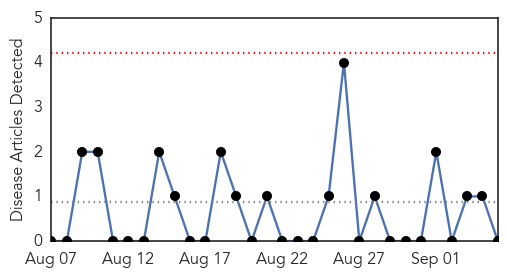
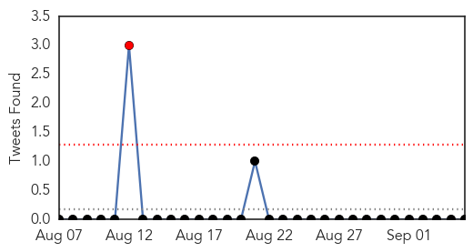

Swine Flu
30-Day Web Trend
0 alerts, 0 warnings

30-Day Twitter Trend
1 alerts, 0 warnings

Article Locations

Article Confidences

Top Articles:
-
No articles found for Sep 05, 2014
Top Tweets:
-
No tweets found for Sep 05, 2014
Cholera
30-Day Web Trend
1 alerts, 0 warnings

30-Day Twitter Trend
0 alerts, 0 warnings

Article Locations

Article Confidences
Top Articles:
- 0.991
- Gov’t to step up cholera fight
- 0.988
- Cholera cases on the decline
- 0.967
- In South Sudan, Deadly Kala Azar on the Rise
- 0.967
- In South Sudan, Deadly Kala Azar on the Rise
- 0.967
- In South Sudan, Deadly Kala Azar on the Rise
- 0.830
- Haiti : Humanitarian Dashboard (January - July 2014) - Haiti
- 0.806
- Ethiopia: Refugees attempt to survive in flooded camps
- 0.782
- Ten cholera cases recorded in two hospitals at Tarkwa
- 0.721
- Increasing Number Of Cholera Patients At CCTH
- 0.686
- Gov’t Must Be Pragmatic To Solve Our Health Problems-PPP
- 0.673
- Tackling cholera outbreaks in South Sudan - South Sudan
- 0.510
- AMA And NADMO Donates To Korle-Bu Polyclinic
Top Tweets:
-
No tweets found for Sep 05, 2014